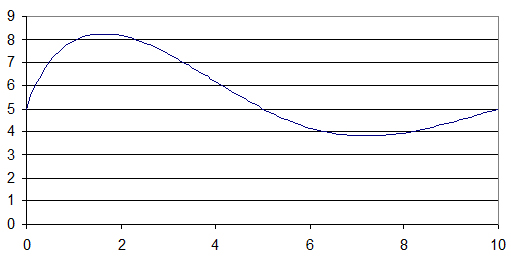
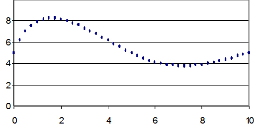
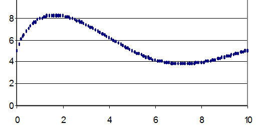

|  |
| Imagen 4. Recurso propio. |
La señal anterior es una señal CONTINUA, es decir una sucesión de puntos continua, que describe un fenómeno. Es una señal analógica.
Un dispositivo digital no entiende este tipo de señal puesto que precisa que el mismo esté definido por valores DISCRETOS (0's, 1's y combinaciones de ellos). Es decir entendería una una señal como ésta:
 |
| Imagen 5. Recurso propio. |
Este tipo de señal recibe el nombre de señal DISCRETA. En ella cada punto es un valor concreto que puedo expresar como combinación de 0´s y
1´s. Es evidente que la primera gráfica tiene mucha mas
información que la segunda. Fijémonos en las dos gráficas siguientes:
|  |  |
| Imagen 6. Recurso propio. | Imagen 7. Recurso propio. |
Puedes ver como la primera de estas dos imágenes contiene más información que la gráfica antgerior,
mientras que la última de las figuras tiene casi tanta información como la señal
continua inicial.
El ser humano se desenvuelve en el mundo físico gracias a los sentidos. Los sentidos pueden ser descritos como SENSORES que captan una señal física (un sonido, una luz, un olor,...) y lo convierten en señales inteligibles por nuestro cerebro.
Un ordenador trabaja de forma muy similar, pero con una diferencia clara. El cerebro humano sí entiende señales analógicas mientras que el ordenador, al ser un dispositivo digital, precisa “traducir” estas señales a señales digitales.
Los dispositivos que hacen esto se llaman convertidores Analógico/Digital (A/D). Los dispositivos que hacen lo contrario, es decir transformar una señal digital en una analógica se denominan convertidores Digital/Analógico (D/A).
Un buen convertidor A/D es el que tomando la señal de la gráfica de la imagen 4 muestrea y da como resultado la Imagen 6. Un convertidor A/D que nos diese como resultado la gráfica de la imagen 5 sería un dispositivo mucho menos eficiente.